Prva vježba: Zadatak je bio napraviti vlastiti font u nekom programu. Ja sam radila u FontForgeu.
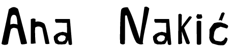Druga vježba:Crtali smo Bezierove krivulje i stavili ih unutar vlastitog fonta.
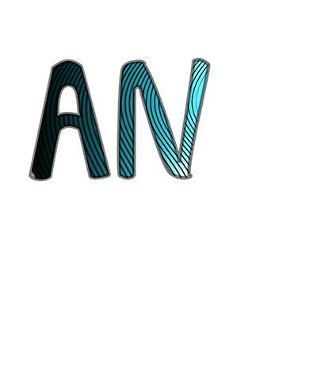Treća vježba: Crtali smo u programu Inkscape i koristili smo swatch boje.
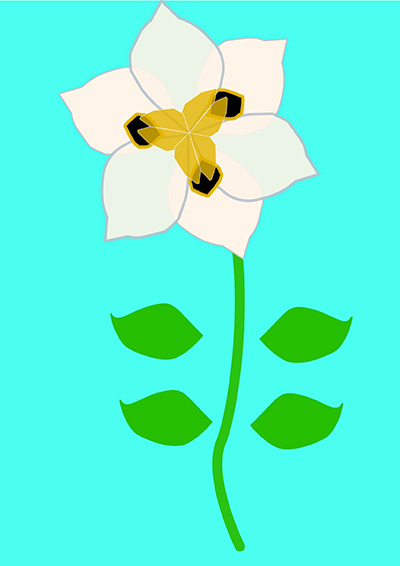Četvrta vježba: U Inkscapeu smo crtali složene objekte koji se satsoje od više zatvorenih krivulja. Koristli smo razne vrste gradijenta.
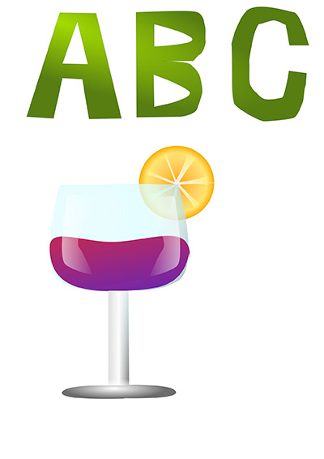Projektni zadatak 1: Morali smo koristiti sve elemente koje smo naučili iz gore navedenih vježbi. Nažalost sam imala problema sa exportom pdf-a.
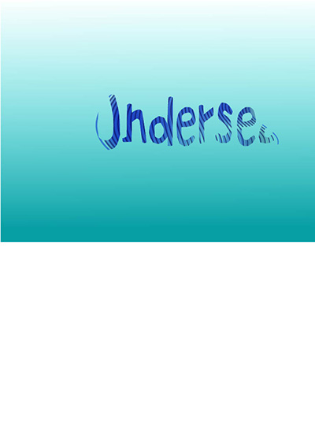Peta vježba: U petoj vježbi smo koristili tehnike retuširanja u photoshopu. Popravljali smo nedostatke na slikama.
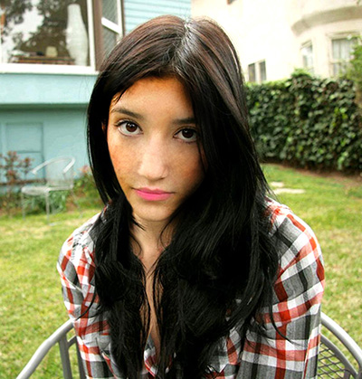 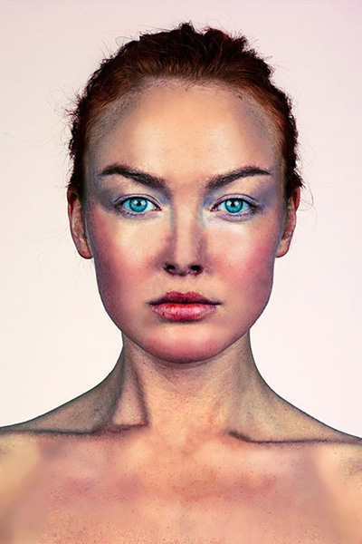Šesta vježba: U ovoj vježbi smo prolaili kroz tehnike neinvazivnog koloriranja slike koje smo primjenili na crno-bijele slike. Radila sam u programu photoshop.
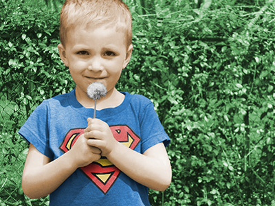 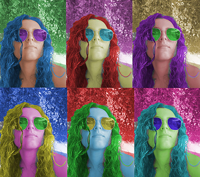Sedma vježba: U ovoj vježbi smo radili fotomontažu. Izrezivali smo djelove drugih slika te ih spajali u jednu cjelinu. Radila sam u photoshopu.
 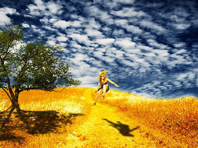
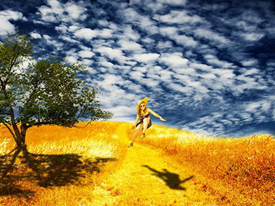
Projektni zadatak 2: Koristili smo sve elemente koje smo radili u petoj, šestoj i sedmoj vježbi.
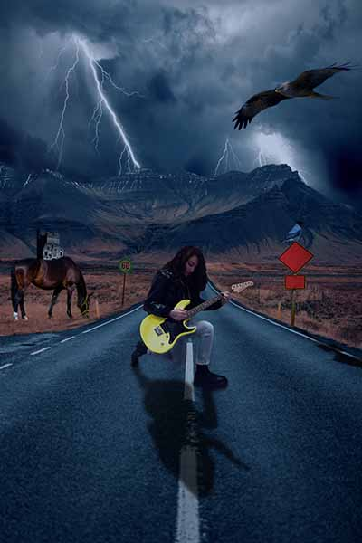Osma vježba: U osmoj vježbi smo radili kinemagraf. Radila sam u programu shotcut i photohopu. Od videa smo napravili gif bez zvuka.


Deseta i jedanaesta vježba:Kodirali smo svoju stranicu. Ja sam koristila program Atom.
stranica vrati me doma